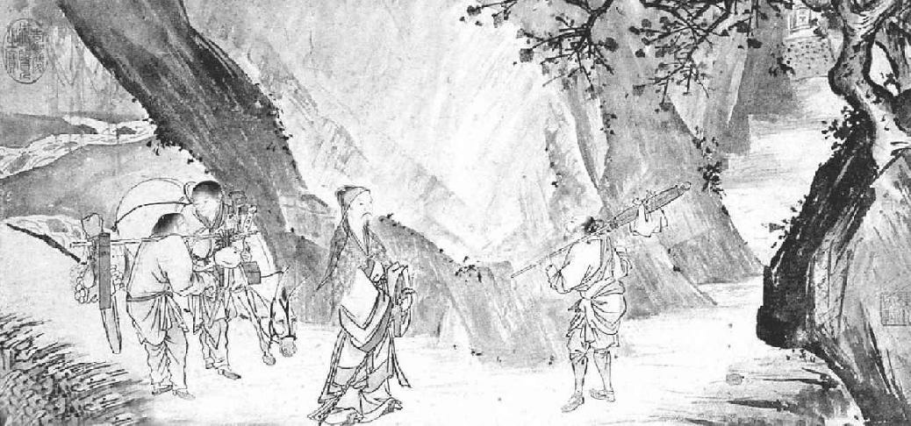

第十八章 浪迹天涯
苏东坡此后一年零八个月的命运足以表示官身不由己。读书人能用别的方法谋生，最好不要做官，他的遭遇便是充分的理由。苏东坡当前的道路真是崎岖坎坷、瞬息万变，一直到他人生的末日，不是出乎他的本意，却与太后大有关系。皇帝有意使他掌史馆，却被左右所阻。皇帝最后亲书一道旨意，把苏东坡的谪居地由黄州调到汝州（今临汝），汝州离京师较近，生活亦较为舒适。他听到这个消息，是在神宗元丰七年（一〇八四年）三月初。
他当然躲避这个任命，按他自己的话，这犹如“小儿迁延避学”。人做官不外乎为名为利，或为权势，或为报效国家。我们知道苏东坡非以做官为发财致富之道，至于权势，他根本不愿控制别人。有些人身上有一种天性，他本已有钱有名，但想钻入政治圈儿去，只为了去支配别人。初尝权力的滋味，还颇觉味美，但除少数例外不提，二度竞选美国总统的人不是不知“何以利吾身”，大概就是身不由己。他去再度竞选，因为他所属的政党要他去竞选。若说报效国家，于理欠通，因为反对派里不是也有人如此呼喊吗？至于为名，苏东坡知道，即便是身为宰相，也不能在他不朽的文名上有丝毫增减。他又何求于政治？他又能有何成就？
在三月初三，他还胸怀坦荡，与朋友畅游甚乐，在定惠院后面商家花园逍遥终日，酒宴之后，他还在一个小楼上酣睡一觉。醒后，漫步踱出东门，在东门看见商店一个大木盆，买下来，预备存水浇瓜。然后沿着一条小溪，进入何氏花园。何家正在房旁添盖厢房，请他稍留，在竹林中喝几盅。一个朋友端出一盘糕，东坡巧予命名为“为甚酥”。大家都喝酒，只有参寥和尚只喝枣汤。苏东坡忽然急想回家。他看见何氏园有橘子树，要了几棵树苗，要回去种在雪堂的西畔。
两三天之后，消息到来，要把他改调他处。虽然名义上他还是在贬谪中，可是能自由住在一个美丽而富有的城市了。有数天的工夫他犹疑不决，是否应当奏请继续住在黄州。后来又一想，这道新任命是皇帝的一分好意，他终于决定遵奉圣命，放弃东坡的农舍。他数年的辛勤弃于一旦，也许他还要在别的地方重新创建一个农舍，一切要从头做起呢。可是，甚至在他这样困难的情况之下，调职之后，他的政敌还不肯把他放松。当时一个作家记了下面一个故事：
苏东坡给皇帝上了谢表，皇帝向四周一看，告诉群臣道：“苏轼真是天才。”他的政敌甚至想在他一篇例行公事的谢表里找他的毛病。政敌说：“臣以为他在谢表里还是口出怨言。”
皇帝感到意外，问道：“怎见得？”
“在这谢表上，他说他和他弟弟考过殿试，却用‘惊魂未定，梦游缧绁之中’。他不是说他们以坦白批评朝政的策论考中，但是现在却以批评朝政而受惩处吗？他是不甘心认错，还是委过于人呢？”
皇帝泰然道：“我很了解他，他心里是好意。”
小人因此才闭口无言。
苏东坡准备搬家，也费了几十天工夫。他决定先到高安看弟弟子由，留下孝顺的长子迈带领家眷，在他从子由处回来时，大家在九江碰头。
现在大官纷纷为他设宴送行，很多朋友请他题字留念，这个，他当然提笔蘸墨一挥而就。很快就应酬完毕。就在这时，歌妓李琪也收到他赠的一首诗，使她得以名垂后世。在邻人和朋友为他送行的宴席上，他写了下列的一首词：
《归去来兮图》之《问征夫以前路》 中国画 马轼 明辽宁省博物馆藏
“归去来兮，吾归何处”，这句名言化用陶渊明的《归去来兮辞》：“归去来兮，田园将芜胡不归！”苏东坡不仅非常敬佩陶渊明不肯为五斗米折腰的骨气与精神，而且对陶渊明崇尚自然、回归自然的思想显然有强烈的共鸣。
归去来兮，吾归何处？……人生底事，来往如梭。待闲看，秋风洛水清波。好在堂前细柳，应念我，莫剪柔柯。仍传语，江南父老，时与晒渔蓑。
一大群人送他启程。那群人里有士绅，有穷人，有各色人等。我们知道名字的那些邻居朋友，一直把他送到船上的，计有十九人。路两旁也有他的朋友、陌生人、农人，也有感激他的穷父母，怀里抱着孩子，那孩子的命就是这位行将离去的文人搭救的。那十九个送他的人一直送到慈湖，在苏东坡最后离去之前，大家又一起消磨了几天。
但是另外有三个朋友，一直陪他到九江。一个是老朋友陈慥，另外一个是和尚参寥，他和苏东坡是在徐州认识的，后来在黄州突然出现，和他住了大概一年。在中国古代，没有人像出家人游踪之广的，不但因他们完全空闲行动自由，也因为他们走到何处都有他们的旅馆住，那就是有他们的寺院。参寥决定到九江庐山去住。
第三个朋友是道士乔仝，他现在大约有一百三十岁，据传说，后来他又从坟里复活。到了九江，苏东坡离开了他本要走的路途，又走了陆路一百多里，为了把这位老道士交给他在兴国的一个朋友照顾。乔仝喜爱鸟兽，永远带着他养的鸟兽一同旅行。据子由说，最后此一老人是被骡子踢伤而死的。又过了几年之后，一个和尚告诉子由，说最近在某处遇见另一个和尚，那个和尚说他自己是乔仝，并且说在黄州结识了苏东坡。子由打听那个和尚的样子，说此话的和尚所描述的和那个老道士完全一样。在听这个故事的那些人之间，有一个是兴国太守的儿子，他回家把此事告诉了他父亲。为了要证实乔仝的死而复生，那位太守下令重开乔仝的坟，只发现了一根手杖和两块胫骨，尸体不见了。
苏东坡和参寥一同游庐山数日。在数百和尚之中曾引起极大的轰动，因为消息已在他们中间传开，大家都说“苏东坡来了！”虽然苏东坡只写了三首游庐山诗，其中一首成了描写庐山最好的诗。
东坡去看弟弟子由时，三个侄子迎接他，他们是走出八里地前去迎接的。兄弟们已经四年没见，子由肥胖了些。他看上去并不太健康，因为他夜里费好多时间练瑜伽术。监酒官的办公室就在一所小破房子里，既露风露雨又摇摇欲坠，俯首便是江边。据子由说：“旧以三吏共事，余至，其二人者适皆罢去，事委于一。昼则坐市区鬻盐、沽酒、税豚鱼，与市人争寻尺以自效。莫归筋力疲废，辄昏然就睡，不知夜之既旦。旦则复出营职。”
苏东坡在那儿住了六七天，然后顺流而下到九江，好与家属相会。和家属一同顺长江下行，七月到金陵。在金陵，朝云生的儿子才十个月大，患病而死。这对父母是个极大的打击，尤其是对年轻的母亲。苏东坡在一首记孩子死的诗里，说孩子的母亲终日在床上躺着，精神恍惚，东坡虽然能擦干自己的眼泪，听见朝云哭，实在难过。东坡有“我泪犹可拭，母哭不可闻”诗句。朝云没有再生第二个孩子。
在金陵时，苏东坡去看王安石，王安石已经是疲惫颓唐的老人。苏东坡和他讨论诗与佛学多日，因为二人都是大诗人并深信佛学，自然有好多话说。有一个故事流传，说苏东坡一次按固定的韵脚和题目与王安石和诗，胜过了王安石，王安石便中途作罢。二人谈话时，苏东坡直言责备王安石不该引发战事，不应该迫害读书人。
苏东坡说：“我有话要跟你说。”
王安石立刻脸上变色道：“你要提起往事？”
苏东坡说：“我要说的是国事。”
王安石才镇静了一点儿说：“说吧。”
苏东坡说：“汉唐亡于党祸与战事，我朝过去极力避免此等危机。但是现在却在西北兵连祸结，很多书生都被送往东南。你为何不阻止？”
王安石伸出二指向东坡说：“这两件事是由惠卿发动，我今已退休，无权干涉。”苏东坡说：“不错，不在其位，不谋其政。不过皇上待你以非常之礼，你也应当以非常之礼事君才是。”
王安石有点儿烦躁起来，回答说：“当然，当然。今天的话出在安石口，入在子瞻耳。”他意思是二人所言切勿传出此屋，因为他一度为吕惠卿所卖，所以如此小心。二人漫谈下去，王安石有点儿前言不搭后语。他说：“‘行一不义，杀一不辜，得天下弗为’，人非如此不可。”
东坡说：“今之君子，争减半年‘磨勘’，便不惜杀人。”
王安石笑而不语。
根据好多同代人的记录，在这一段期间，可以常看见王安石在乡间独自骑驴闲行，“喃喃自语，有如狂人”。他有时想到当年已经背弃他的老友，便突然拿起笔来，面色凝重，立刻开始写一封信。但是片刻之后，他又把笔放下，好像也颇以自己为耻，这些信没写完，就永远摆在那里了。他仍然继续写日记，他死后几年，所有的日记奉命交还朝廷，因为其中有当权派的内幕。他在失意的晚年，变得心内凄苦抑郁，对人非常怀恨，对皇上也常是恶语相加。幸而当时当权者还是他一派。但是他的日记竟写了七十多本，很多人见过。前几年，他听说司马光又已当权，令侄子把日记烧毁，但是他的日记之仍然留在人间，是因为他侄子把日记藏了起来，烧了些别的东西蒙混过去。
王安石现在开始看见幻象。一次，他看见他那独生子，那时早已死去，却正在阴间受罪。他知道自己的儿子活着时是个坏蛋，无所不为，现在在阴间戴着铁链、手铐。后来，他家一个侍卫说在梦里也看见同样的情景，王安石着实害起怕来。为救儿子免于阴曹的折磨，他把上元县的财产卖出去，把钱捐给寺院。王安石曾向朝廷奏明捐款与寺院一事，朝廷因此赐予那个寺院一个名字，同时王安石上朝廷关于此事的表章而今还在。他死的前一天，在野外骑驴独行，看见一个农妇向他走近，跪在他面前，向他呈递一份诉状，然后消失不见。他记得把诉状放在衣袋里，到家一看，那份诉状也不见了。他第二天因惊吓去世。
等苏东坡到了土地肥沃的江苏地带，他不觉迷恋上当地的气氛和自然之美。在往返于金陵和镇江之间时，他心中忙着盘算在太湖地区买一个农庄。他的情形是这样：皇帝既然愿把他从黄州调到另一个地方，日后也会听从劝说而准许他在别处安居。不论他往何处去，总是存心找个老年退隐之地。他的不少好友出的主意都不相同。他的方外友人佛印劝他安居在扬州，因为佛印的农庄在扬州。范镇愿他到许下，二人为邻。东坡自己看中了丹徒县蒜山的一片松林。不过，这些计划都落了空。长江以北靠近金陵有个仪真县，仪真的太守约他前往居住，他虽然没有决心在仪真安居，至少想找个地方暂时安顿眷属。所以家眷暂时住在仪真学府中时，东坡总算没有牵挂，得以各处走走逛逛，寻找一个乡镇的家园。
最后，几个最亲密的朋友之中，有一个滕元发，劝他安居在常州的太湖左岸宜兴，滕元发那时正任太湖南岸的湖州太守。苏东坡和滕元发二人暗中订了一项计划，在宜兴买了一块儿田地，然后奏请皇上允许他在宜兴安居，因为那块田地是他唯一的生活之所出。滕元发的一个亲戚能找到一块儿地，在宜兴城二十里外，深在山中。那块地很不小，一年可产米八百担，会使苏家生活得蛮舒服。苏东坡当时只剩下几百缗钱，此外只有父亲以前在京都买的一栋房子，但是早已托范镇以八百缗钱卖出去。
九月，他独自下乡去看那块田庄。他曾记此事说：“吾来阳羡（宜兴），船入荆溪，意思豁然，如惬平生之欲。逝将归老，殆是前缘。……吾性好种植，能手自接果木，尤好栽橘。阳羡在洞庭上，柑橘栽至易得。当买一小园，种柑橘三百本。……元丰七年十月二日书。”
后来他又另买了一块儿地，是从官家买的，并曾为此地涉讼。将近百年之后，曾有一作者记载苏东坡的重孙子仍住在宜兴那块农庄上。
苏东坡现在总算办了一件事，到底是极其愚蠢，还是宽宏厚道，看法也就因人而异了。他给滕元发写信，说他要在荆溪边找一栋房子，他真找到了。他和友人邵民瞻去找，结果找到一栋很好的老宅子，也付了五百缗钱。这就用光了他所有的钱，但是苏东坡很高兴，心里盘算回去把家眷接来住进去。一天晚上，他在月光之下和邵民瞻在村中漫步，经过一家时，听见里面有女人哭泣声。他俩叩门走进去。一老妇正在屋角哭。一问缘故，老妇人说：
“我有一栋房子，一百多年来一直是我们的财产。我有个败家儿子，把那房子卖给了别人。今天我不得不从那栋老房子里搬出来，我在那老房子里已经住了一辈子——这就是我为什么哭的缘故。”
苏东坡很受感动，又问她：“那栋房子在哪儿？”
苏东坡大惊，原来那正是他用五百缗钱买的那栋房子。他把契约从衣袋里拿出来，在老妇人面前一把火烧了。第二天他把那个儿子找来，告诉他再把老母请回旧宅去，并没有再讨回付的房钱。那个儿子到底是已经用那笔钱还了债，还是另有别的原因无力付还，我们就不得而知了。苏东坡于是回到城中，既没了房子，又损失了五百缗钱。但是当时东坡一时为真情所感，无法抑制，竟对自己家的后果不管不顾！事情做得美则美矣——还有什么别的好说！
回到常州之后，在十月里，他给皇帝上书，请圣命谕允居住于常州。在皇帝应允之前，他还是要去接新的任命，远在国都的西部，大约有五百里的旅程。他携带着全家往都城方向前行，慢慢行进，盼望如幸蒙圣命恩准，就不致花费往返两次旅费了。但是迄未获得恩准的消息，他勉强前行，前往京都。我们若相信他的诗上所说，他的眷属真是忍饥挨饿了。到了泗州的淮河边，他给朋友至少写了三首诗都提到饥饿。在一首诗里，他自比为夜里啃啮东西的饥鼠。在太守送食物到船上时，孩子们欢声雷动。看情形他们不能再前进了，他决定再给皇帝上表章，这时住在南京老友张方平家，静候圣旨到来。
他上皇帝第二书，是二月间在泗州写的，其中一部分如下：
但以禄廪久空，衣食不继。累重道远，不免舟行。自离黄州，风涛惊恐，举家重病，一子丧亡。今虽已至泗州，而资用罄竭，去汝尚远，难于陆行。无屋可居，无田可食，二十馀口，不知所归，饥寒之忧，近在朝夕。与其强颜忍耻，干求于众人；不若归命投诚，控告于君父。臣有薄田在常州宜兴县，粗给饘粥。欲望圣慈，许于常州居住……
他在旅途上，发生了两件有趣事，也可说令人难过的事。在泗州他渡河去游了南山之后，写诗一首。河上有一座长桥，因泗州为军事要隘，天黑以后此桥上不许行人通过，违犯者重罚。实际上，泗州太守是不理会这条规矩的，他在天黑后和苏东坡同过此桥。为了庆祝此次游山之乐，苏东坡很天真地写出了下列两行词句：
望长桥上灯火闹， 使君还。
太守为人老实正直，是山东省一位学究，姓刘。第二天他一见苏东坡的词，心都快跳出来。他到船上去看东坡，说：“我看了你的词，这很严重，太严重了！你的词全国皆知，一定会传到京都。普通人夜里过桥是罚两年劳役，太守犯法，情形更糟。求你把这词自己收起来，不要给别人看。”
苏东坡追悔不迭，微笑道：“天哪！我一开口即是罪，何止两年劳役呀！”
他住在张方平家时，出了另一件动人的事情。在主人请他吃饭喝酒时，他认出了张方平儿子的妾，那个女人以前曾做过黄州太守的妾，深得太守钟爱，名叫胜之。太守当年为苏东坡好友，不幸亡故，此妾亦即改嫁。苏东坡一见此女在张家筵席上出现，状极轻松愉快。他颇为感慨，想起老朋友来，两眼泪痕，喉头哽咽。这却逗得胜之发笑，她只得转过头去和别人说话岔开。苏东坡离席时心中很难过。他告诉朋友说人千万别纳妾，就举胜之为例。
皇帝染病，从三月一日起，太后摄政。三月五日，皇帝驾崩；次日颁下圣旨，允许苏东坡在太湖边居住。这对苏东坡十分重要，因为他如愿以偿，他的计划实现了。一家开始迁回宜兴，在四月初三离开南京，到达湖边新居，是神宗元丰八年五月二十二日。苏东坡而今终于相信他会终生在此安居下来。他的诗里有两句：“十年归梦寄西风，此去真为田舍翁。”他要在富有田园之美的江南度其晚年了。他可以乘一叶之扁舟悠然来往，“神游八极万缘虚”，真正优哉游哉了。
但是命运偏偏作梗。正当他把退隐之地已物色到，朝廷对他再度任命的消息又来了。在他到宜兴后还不到十天，就得到消息，朝廷派他到离山东芝罘不远的登州去做太守。原先以为是京城传来的谣言，他拒不肯信，他说京都一向谣言多，并且最近四月十七日的官报上也不曾提过。
苏东坡心乱如麻，心里很恨这种变化。几天之后，正式任命到达。家里人大喜，孩子们喊叫觉得喜出望外。苏东坡在一首诗里自比为可怜的良马，盛年已逝，再不贪天山的牧野。在另一首诗里说：“南迁欲举力田科，三径初成乐事多。岂意残年踏朝市，有如疲马畏陵坡。”在给佛印的信里他说如入“蓬蒿藜藿之径”。给米芾的信里说：“某自登赴都，已达青社，衰病之馀，乃始入闹，忧畏而已。”
可是，他仍然接受了新任命。太后现在把情势推动起来。司马光又被任命为门下侍郎，实际上等于副相之位。任命司马光的情形很有趣，皇太后是派武装兵士把他从家中请出，一直“护送”到官衙里去的。所以用这种方法，是唯恐他接到任命之后会延迟赴任，甚至会辞谢不就，也是不得已而别开生面了。
苏东坡在六月到山东沿海去就新职。由青岛附近开始乘船，绕山东半岛而行。十月十五到达登州后五天，他又应召进京。全家开始行动起来，将近元丰八年十二月半，到达京都。